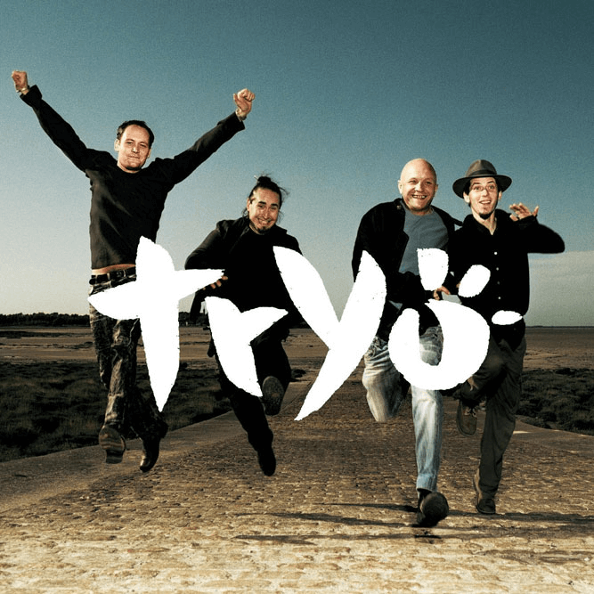
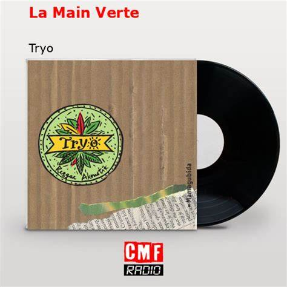

Accueil
Bienvenue sur notre fansite dédié à Christophe Mali, chanteur, compositeur et membre du groupe Tryo. Ici, vous trouverez des informations exclusives, des photos et bien plus encore sur sa carrière et sa passion pour la musique.
À propos de Christophe Mali
Christophe Mali est un artiste français reconnu, notamment pour son rôle de chanteur dans le groupe Tryo. Avec une voix unique et un talent pour la composition, il aborde des thèmes variés tels que l'écologie, la justice sociale et l'amour dans ses chansons. Passionné et engagé, Christophe Mali est un pilier de la scène musicale française depuis de nombreuses années.
Il a également une carrière solo et a sorti plusieurs albums qui explorent des styles musicaux divers, toujours avec un message fort et authentique. Son influence s'étend bien au-delà de la musique, touchant ses fans avec des valeurs d'humanisme et de solidarité.
Galerie
Découvrez des photos et vidéos exclusives de Christophe Mali en concert, en studio, et dans ses moments de vie quotidienne. Plongez dans l'univers de cet artiste unique.
Gro Biskoto
J'aspire ton âme man
Hey t'es celib ?
Je t'offre la fleur de mon coeur
Discographie
Découvrez les morceaux les plus populaires de Christophe Mali en 2023, avec leur nombre d’écoutes :
- "Désolé pour hier soir" - 12,4 millions d'écoutes
- "L'Hymne de nos campagnes" - 10,2 millions d'écoutes
-  "Ce que l'on s'aime" - 8,9 millions d'écoutes
-  "La Main verte" - 7,5 millions d'écoutes
- "Serre-moi" - 6,7 millions d'écoutes
Ces chansons ont marqué les fans par leurs paroles engagées et leurs mélodies entraînantes, et continuent de rencontrer un succès durable auprès du public.